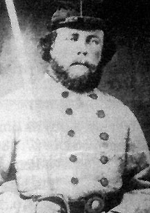

|

NAME: William Lemuel Cantelou
BORN: 1835
DIED: 1883
ALLEGIANCE: Confederate
HIGHEST RANK: Lieutenant
UNIT: 6th Alabama Infantry; 53rd Alabama Cavalry, Partisan Rangers
RECORD: Enlisted April 17, 1861, in the 6th Alabama Infantry.
Discharged December 27, 1861, due to rheumatism. Enlisted January 21,
1863, in the 53d Alabama Cavalry, Partisan Rangers. Mustered into the
J. F. Clements Local Defense Infantry in Hayneville, Alabama, on
August 8, 1864.
|
|
Some of the young men who enlisted in the Confederate army
did so to preserve the Southern way of life. Others signed
up for the wages they would receive as a soldier. And some
joined simply because soldiering was in their blood.
William Lemuel Cantelou's great-grandfather was a French
immigrant who had joined General George Washington's
Continental Army in its struggle for American independence.
Young William and his brother grew up listening to stories
of their ancestor's courage at Yorktown, where he had been
seriously wounded. His sword was proudly displayed over the
fireplace. Small wonder, then, that when civil war broke
out, the Cantelou brothers jumped at the chance to follow in
their great-grandfather's footsteps.
By the time William enlisted in the 6th Alabama Infantry
in April 1861, he was 26 years old and was the widowed
father of a son, Willie. His military career appeared
destined to be even shorter than his 20-month marriage: he
was discharged in December 1861 due to rheumatism. But after
a year of recovery and a second marriage--to Joanna R.
"Josie" Connally on December 29, 1862--Cantelou reenlisted
in January 1863 and was made a lieutenant in the 53rd
Alabama Cavalry, Partisan Rangers. It was as a member of
this unit that he sat for the portrait shown here.
Sometime between January 1863 and August 1864, Cantelou
left the army and returned home to Lowndes County in south
central Alabama, where he settled with his wife on a
390-acre estate and eventually fathered four children. When
the need arose, however, he would still be ready to serve:
Cantelou's name appears on an August 1864 muster-in roll at
Hayneville, Alabama, for the J. F. Clements Local Defense
Infantry. Cantelou died in 1883 and was buried in Oak Hill
Cemetery in Birmingham, Alabama.
Source: Civil War Times Illustrated
42:1 (April 2003), 24.
|